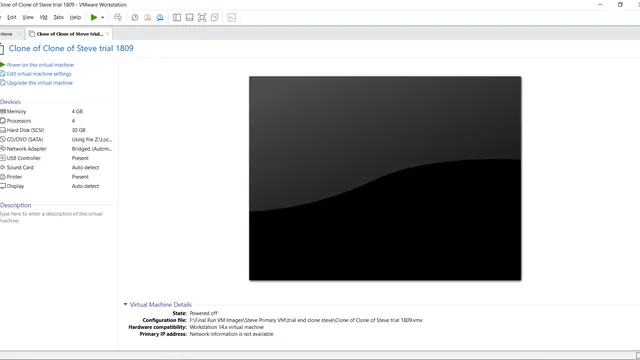
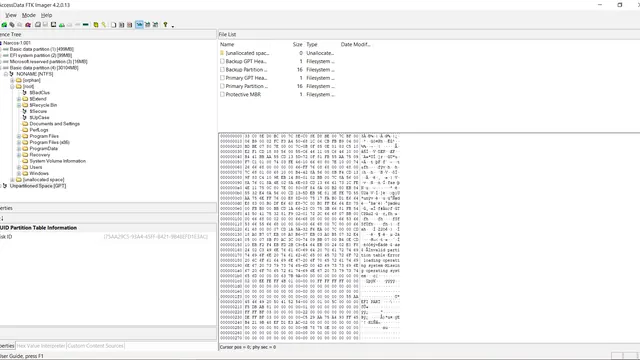
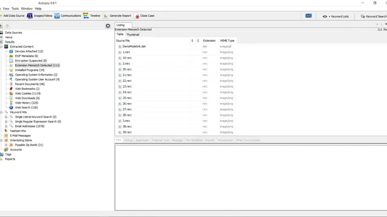
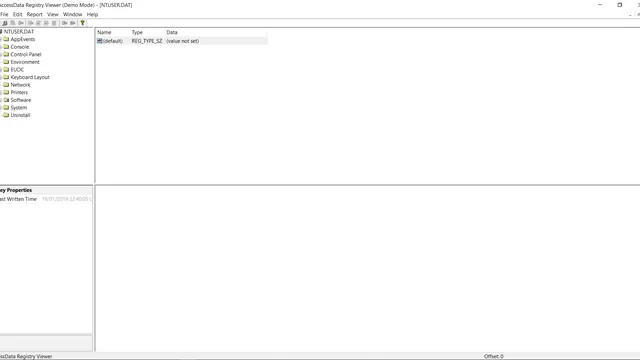
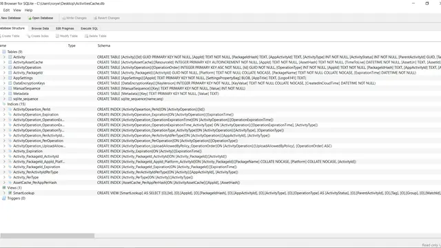
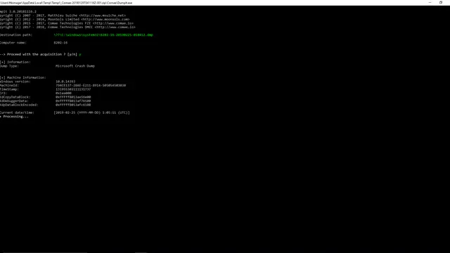
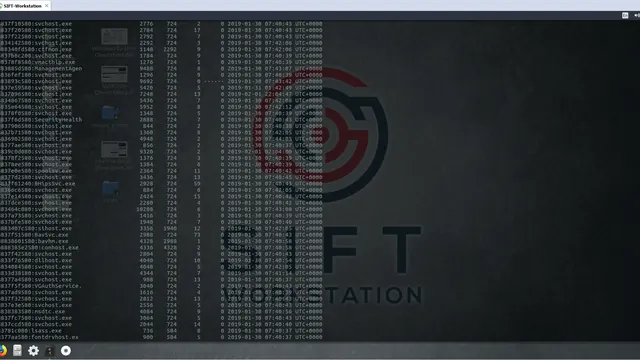
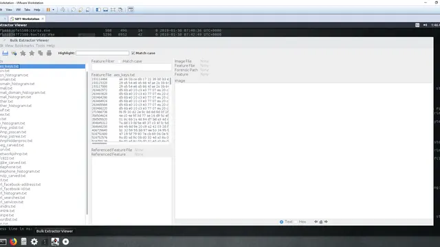

DFIR Sleuths
DFIR Sleuths
Welcome to Digital Corpora
The Team
The team behind the Narcos scenario for the Wellington Institute of Technology project.
-
Corran Cockburn
Project Manager
-
Abdul Farah
Team Member
-
Kurt Knudsen
Team Member
LinkedIn: Kurt Knudsen (opens in a new tab) -
Rory Wagner
Team Member
LinkedIn: Rory Wagner (opens in a new tab) -
Paul Bryant
Client
LinkedIn: Paul Bryant (opens in a new tab)
The Project
-
Scenario
Find out more about the scenario
Learn more about the scenario → -
Methodology
The process used to develop the project
Learn more about the methodology → -
Testing
The testing process utilised
Learn more about testing →
Tools
-

VMware -

FTK Imager -

Autopsy -

Registry Viewer -

DB Browser for SQLite -

DumpIt -

Volatility -

Bulk Extractor


Get in touch
Feel free to get in touch through the LinkedIn links below our profile photos or the Wellington Institute of Technology.